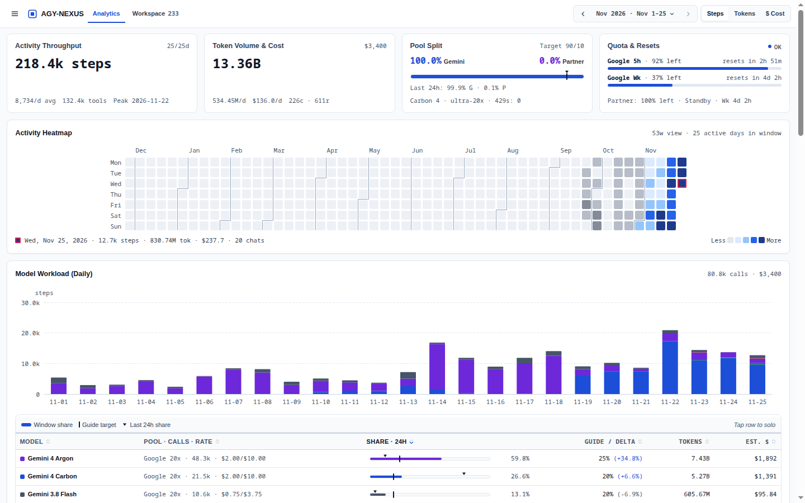
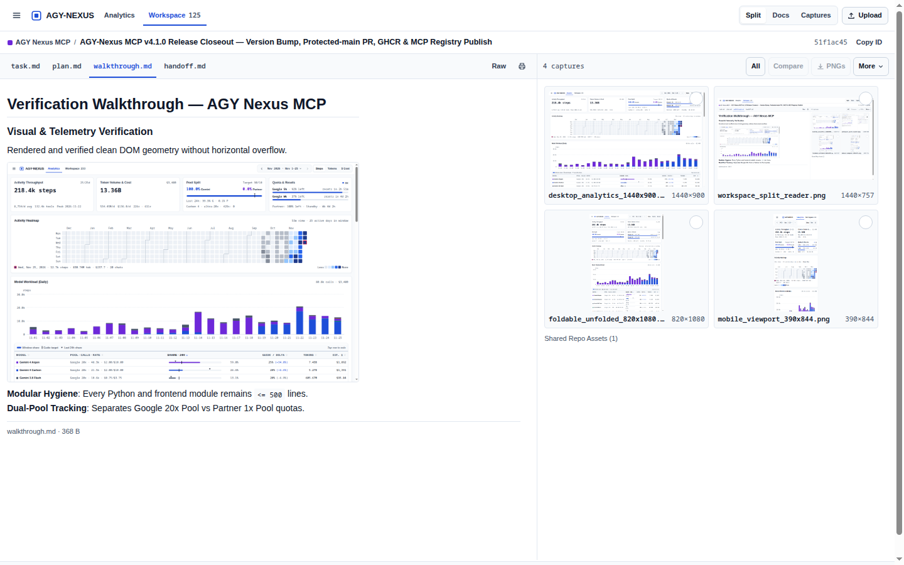
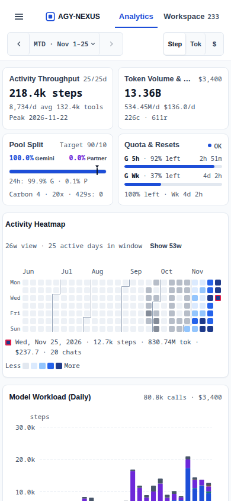

Steer home coding from Gemini
Check live diffs, review mobile and desktop screenshots, and resume queued tasks right from Gemini on your phone or browser while private files stay protected by a Thirty-Minute Passphrase Lock.
OPEN AGENTIC WORKBENCH · ANTIGRAVITY NEXUS
Connect Gemini on your phone or browser to your home coding workstation, see real Gemini and Claude quota percentages left before limits hit, and route routine edits to fast helper models.
Launch the safe terminal doorway in --stdio mode with zero secrets or host changes needed.
See Gemini 20x and Partner 1x remaining pool percentages, reset countdowns, and session activity live.
Enable the passphrase-protected remote doorway to review diffs, screenshots, and handoffs on the go.
docker run -i --rm ghcr.io/frankxlt/agy-nexus-mcp:4.2.0 --stdioRuns the Two-Doorway Setup locally in terminal mode — safe catalog tools work immediately without secrets.
Keep full control over your local workstation, model quotas, and code changes in clear, ordinary language.
Check live diffs, review mobile and desktop screenshots, and resume queued tasks right from Gemini on your phone or browser while private files stay protected by a Thirty-Minute Passphrase Lock.
Track remaining Gemini 20x and Partner 1x pool percentages, reset countdowns, and equivalent API cost savings together before a long session hits a limit mid-edit.
Reserve your primary seat for architecture and tricky fixes while dispatching scans, tests, and small edits to fast helper models verified by the Model Routing Check.
Explore a real depersonalized snapshot in your browser with zero setup, no logins, and four instant surface themes.



Every configuration file and panel maps to a clear concept documented in Common Terms and Architecture.
Remote HTTPS traffic enters through /{PATH_SECRET}/mcp with passphrase verification, while IDE code indexing stays LAN-only or --stdio with proxy and origin guards.
Every private file lookup, git diff, and screenshot stays fail-closed behind PASS_HASH and automatically locks again after idle timeout (TTL_SECONDS=1800 default floor).
Shows how much quota remains per model family alongside countdown timers and comparable API costs across Plus, Pro, and Ultra plans.
Checks pool readiness before spawning helper subagents and highlights whenever a task falls back to your main chat model instead of its target helper.